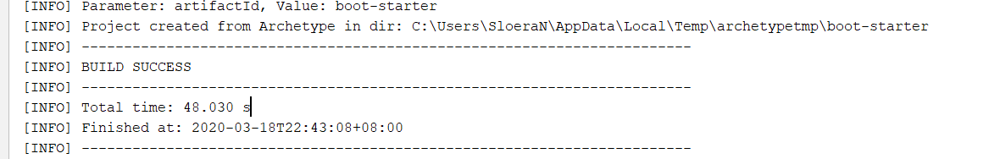
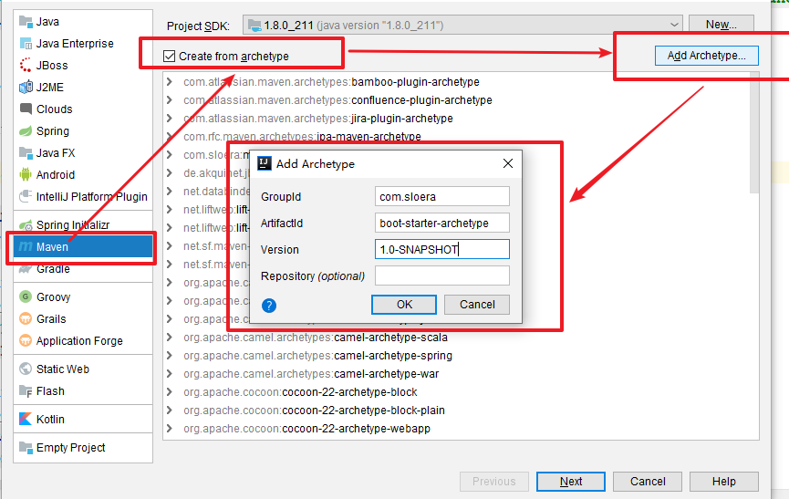
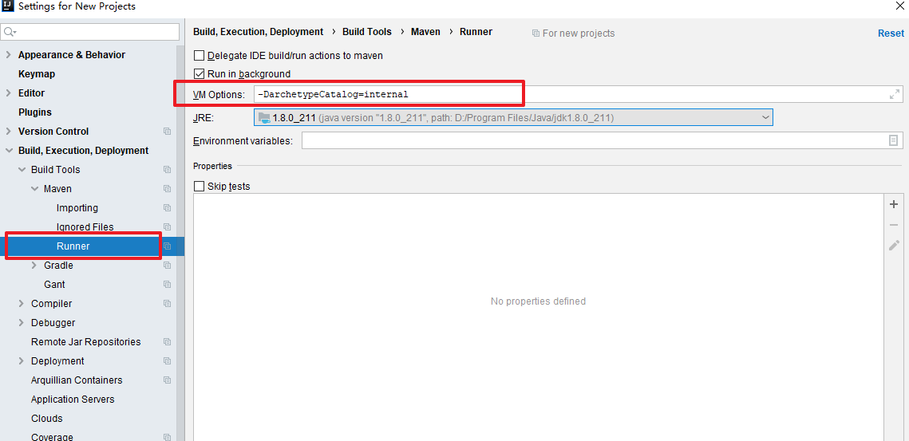

idea用archetype创建模板时，默认从remote下载，调用repo.maven地址，会出现超时错误。本文利用idea创建一个自定义的模板部署到nexus私服，方便以后新建项目时直接调用。
创建一个maven项目
此项目的结构，即为生成后的archetype模板结构。当之后使用此archetype进行新建项目时，会自动创建相同目录结构及maven依赖。
1
2
3
4
5
6
|
groupId com.sloera
artifactId boot-starter
version 1.0-SNAPSHOT
archetypeGroupId org.apache.maven.archetypes
archetypeArtifactId maven-archetype-quickstart
archetypeVersion RELEASE
|
创建完成如图所示

目录结构(tree /f生成)为
1
2
3
4
5
6
7
8
9
10
11
12
13
14
15
16
17
18
19
20
21
|
│ boot-starter.iml
│ pom.xml
│
├─.idea
│ compiler.xml
│ encodings.xml
│ misc.xml
│ workspace.xml
│
└─src
├─main
│ └─java
│ └─com
│ └─sloera
│ App.java
│
└─test
└─java
└─com
└─sloera
AppTest.java
|
可在最外层pom.xml中添加自己的依赖。或添加自定义部署到nexus私服。
1
2
3
4
5
6
7
8
9
10
11
12
13
|
<!--发布到私有nexus-->
<distributionManagement>
<repository>
<id>nexus-releases</id>
<name>Nexus Releases Repository</name>
<url>http://192.168.1.166:8712/repository/maven-releases/</url>
</repository>
<snapshotRepository>
<id>nexus-snapshots</id>
<name>Nexus Snapshots Repository</name>
<url>http://192.168.1.166:8712/repository/maven-snapshots/</url>
</snapshotRepository>
</distributionManagement>
|
需要添加archetype插件。
1
2
3
4
5
6
|
<!-- archetype插件-->
<plugin>
<groupId>org.apache.maven.plugins</groupId>
<artifactId>maven-archetype-plugin</artifactId>
<version>3.1.2</version>
</plugin>
|
构建部署archetype
在项目根位置执行mvn archetype:create-from-project
执行成功后的目录结构为：
1
2
3
4
5
6
7
8
9
10
11
12
13
14
15
16
17
18
19
20
21
22
23
24
25
26
27
28
29
30
31
32
33
34
35
36
37
38
39
40
41
42
43
44
45
46
47
48
49
50
51
52
53
54
55
56
57
58
59
60
61
62
63
64
65
66
67
68
69
70
71
72
73
74
75
76
77
78
79
80
81
82
83
84
85
86
87
88
89
90
91
92
|
│ boot-starter.iml
│ pom.xml
│
├─.idea
│ compiler.xml
│ encodings.xml
│ misc.xml
│ workspace.xml
│
├─src
│ ├─main
│ │ └─java
│ │ └─com
│ │ └─sloera
│ │ App.java
│ │
│ └─test
│ └─java
│ └─com
│ └─sloera
│ AppTest.java
│
└─target
└─generated-sources
└─archetype
│ pom.xml
│
├─src
│ ├─main
│ │ └─resources
│ │ ├─archetype-resources
│ │ │ │ pom.xml
│ │ │ │ __artifactId__.iml
│ │ │ │
│ │ │ ├─.idea
│ │ │ │ compiler.xml
│ │ │ │ encodings.xml
│ │ │ │ misc.xml
│ │ │ │ workspace.xml
│ │ │ │
│ │ │ └─src
│ │ │ ├─main
│ │ │ │ └─java
│ │ │ │ App.java
│ │ │ │
│ │ │ └─test
│ │ │ └─java
│ │ │ AppTest.java
│ │ │
│ │ └─META-INF
│ │ └─maven
│ │ archetype-metadata.xml
│ │
│ └─test
│ └─resources
│ └─projects
│ └─basic
│ archetype.properties
│ goal.txt
│
└─target
│ boot-starter-archetype-1.0-SNAPSHOT.jar
│
├─classes
│ ├─archetype-resources
│ │ │ pom.xml
│ │ │ __artifactId__.iml
│ │ │
│ │ ├─.idea
│ │ │ compiler.xml
│ │ │ encodings.xml
│ │ │ misc.xml
│ │ │ workspace.xml
│ │ │
│ │ └─src
│ │ ├─main
│ │ │ └─java
│ │ │ App.java
│ │ │
│ │ └─test
│ │ └─java
│ │ AppTest.java
│ │
│ └─META-INF
│ └─maven
│ archetype-metadata.xml
│
└─test-classes
└─projects
└─basic
archetype.properties
goal.txt
|
进入cd target/generated-sources/archetype目录。
在archetype下的pom.xml添加自己的私服部署地址。
发布生成的项目到私有仓库。或本地仓库。
mvn clean deploy
此时已完成archetype模板创建。
新建
打开idea，选择maven新建项目如图。

选中Create from archetype，点击Add Archetype，填写的信息为刚才发布的地址。即可在列表中添加自己的模板。
进行idea设置。如下图，使maven构建时不从remote读取配置。

archetypeCatalog用来指定maven-archetype-plugin读取archetype-catalog.xml文件的位置：
internal——maven-archetype-plugin内置的
local——本地的，位置为~/.m2/archetype-catalog.xml
remote——指向Maven中央仓库的Catalog
此时新建maven项目时，选中boot-starter-archetype即为从maven私服中调取。
注：
可在构建一次后，将-DarchetypeCatalog=local，使得之后的创建为从本地仓库读取。
配置自定义archetype参考Archetype Repository
参考
https://blog.csdn.net/Big_Blogger/article/details/78777676
https://maven.apache.org/archetype/maven-archetype-plugin/advanced-usage.html